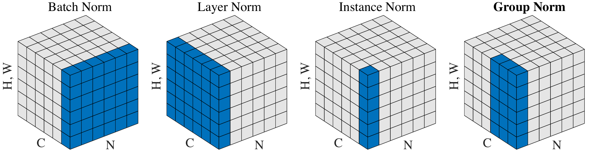
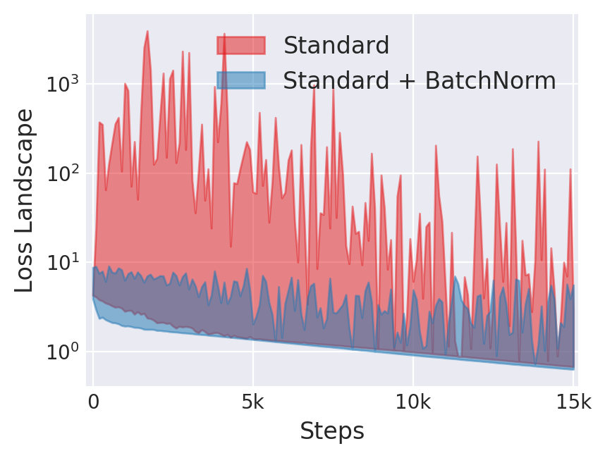
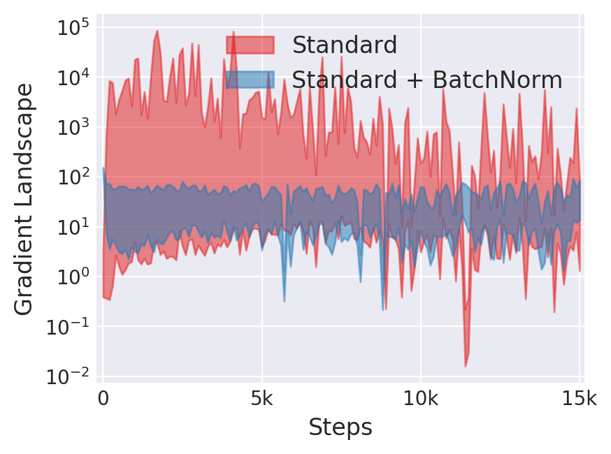
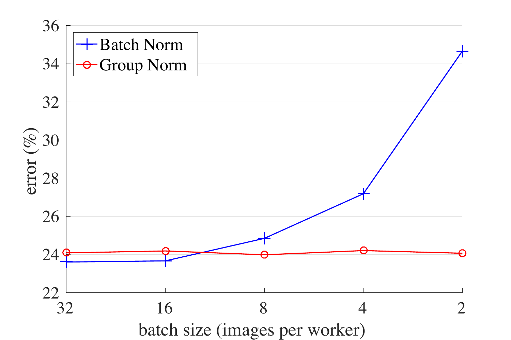
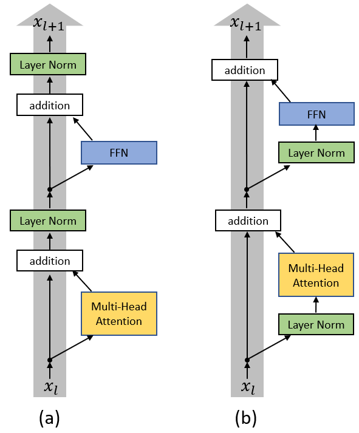
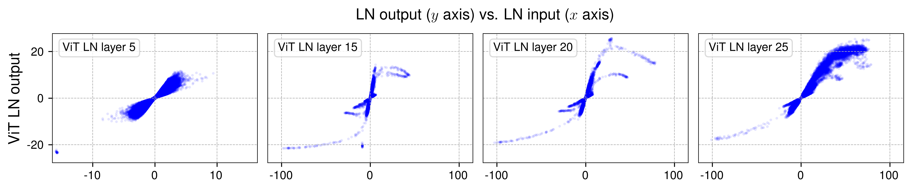

An interactive explainer · fundamentals
Every Normalization Layer Is the Same Layer
Open the source of any modern neural network — a ResNet, a GPT, Stable Diffusion — and you find normalization layers threaded through every block. Delete them and training stalls or diverges outright. Yet they are usually taught as a zoo of unrelated recipes: BatchNorm for convnets, LayerNorm for Transformers, GroupNorm when the batch is small, RMSNorm because the big labs use it. This explainer takes the opposite view. Every one of these is the same layer with one knob turned differently: which numbers do you average over? See the knob, and the zoo collapses into a single picture — and the practical advice falls out of it.

Normalization is the most quietly load-bearing idea in deep learning. BatchNorm, introduced in 2015, is one of the most cited papers in the field; it made it routine to train networks dozens of layers deep, and the ImageNet-era explosion of computer vision rode on it. Today a transformer with its LayerNorms removed will not train at all past a handful of layers. The layers cost almost nothing — a mean, a variance, a multiply — and yet they decide whether a billion-parameter model converges or diverges.
And almost everyone learns them as folklore. You memorize that vision people use BatchNorm, sequence people use LayerNorm, that GroupNorm is the thing you reach for when your GPU only fits a batch of two, that the latest large language models quietly switched to something called RMSNorm. You learn a table of which-norm-goes-where, and the table works, but it doesn't explain anything. It hides the fact that these are not five inventions. They are five settings of one dial.
Here is the whole idea in one sentence. A normalization layer takes a pile of numbers, computes their mean and standard deviation, subtracts the mean and divides by the deviation so the pile is recentered and rescaled, and then applies a small learnable correction. The only thing that separates BatchNorm from LayerNorm from InstanceNorm from GroupNorm is the answer to one question: which numbers go in the pile? Get that, and you can derive the entire family yourself, predict how each one behaves, and know exactly which one your situation calls for.
We will build it in that order. First the universal recipe and the one knob. Then each member of the family, in the order it was invented and for the reason it was invented. Then the layers that bend the recipe — RMSNorm, which drops a step; conditional norms like adaLN, which make the learnable correction depend on context; the question of where in a block the norm should sit. And finally the frontier: recent results suggesting you might not need normalization layers at all. Five interactive widgets and one animation along the way. No prior exposure assumed beyond knowing what a neural network layer is.
1. The universal recipe
Start with the part that never changes. Take any vector or tensor of numbers $x$ flowing through the network — call them activations. A normalization layer does exactly two things to them.
Step one — standardize. Compute a mean $\mu$ and a variance $\sigma^2$ from the activations, then recenter and rescale:
$$ \hat{x} \;=\; \frac{x - \mu}{\sqrt{\sigma^2 + \epsilon}}. $$
After this step the numbers have mean zero and variance one. The tiny constant $\epsilon$ (something like $10^{-5}$) is just insurance: if the activations happen to be nearly constant, $\sigma^2$ is nearly zero, and dividing by it would blow up. Adding $\epsilon$ under the square root keeps the operation finite. That is the entire role of $\epsilon$ — do not overthink it.
Step two — the learnable affine correction. Multiply by a learnable scale $\gamma$ and add a learnable shift $\beta$:
$$ y \;=\; \gamma \,\hat{x} \;+\; \beta. $$
Here $\gamma$ and $\beta$ are ordinary parameters, learned by gradient descent like any weight in the network. And they raise an obvious question: we just went to the trouble of forcing the activations to mean zero and variance one — why immediately hand the network a knob to undo that?
Because forcing mean zero and variance one everywhere is too strong. The next layer might genuinely work best with inputs whose typical scale is 5, or which are centered at $-2$. If we hard-pin every activation to the standard normal shape, we have removed a degree of freedom the network might need — and in the worst case the normalization is actively destructive. The affine step gives the freedom back. Crucially, it gives it back in a form that is easy to optimize. Without normalization, the scale of an activation is an emergent consequence of every weight upstream, tangled and hard to move. With it, the scale is one clean parameter, $\gamma$, sitting right there. The network can still choose any scale it likes — it just expresses that choice through a knob that gradient descent can turn directly. Normalization does not remove freedom; it re-coordinates it into parameters that are pleasant to train.
One consequence worth noting now: because $\gamma$ and $\beta$ exist, a normalization layer can in principle represent the identity function (set $\gamma=\sqrt{\sigma^2+\epsilon}$, $\beta=\mu$). It is never forced to change anything. That is reassuring — adding a norm layer cannot, in the limit, make a network strictly less expressive.
That is the whole recipe: standardize, then affine-correct. Every layer in this explainer is this recipe. BatchNorm is this recipe. LayerNorm is this recipe. RMSNorm is this recipe with step one slightly shortened. adaLN is this recipe with step two made smarter. So if the recipe is fixed, where does all the variety come from? From the four words we have so far left completely undefined: compute a mean. A mean of what?
2. The one knob: which axes?
To compute a mean you need a set of numbers to average. The recipe never said which set. That choice — and only that choice — is what splits the normalization family into its branches.
Picture the activations inside a convolutional network as a 4-dimensional block of numbers, the tensor you saw in the figure at the top:
- $N$ — the batch axis. The network does not see one image at a time; it sees a batch of, say, 32. $N$ indexes which example you are looking at.
- $C$ — the channel axis. At each layer every spatial location carries a vector of features — edge detectors, color blobs, later on noses and wheels. $C$ indexes which feature. (In a Transformer this is the only non-batch axis that matters: it is the model's hidden dimension.)
- $H, W$ — the spatial axes. Height and width of the feature map. We will treat them as one combined axis, "position," and write it $(H{\cdot}W)$.
Now the single question that generates the whole family: when you compute the mean and variance for a given activation, which of those axes do you sweep over, and which do you keep separate? Every answer is a normalization method:
| Method | Average over… | A separate mean/var for each… |
|---|---|---|
| BatchNorm | $N$, $H$, $W$ | channel |
| LayerNorm | $C$, $H$, $W$ | example |
| InstanceNorm | $H$, $W$ | (example, channel) pair |
| GroupNorm | $H$, $W$, and a group of channels | (example, group) pair |
That table is the entire taxonomy. BatchNorm asks "for this one channel, what is the typical value across the whole batch and all positions?" LayerNorm asks "for this one example, what is the typical value across all of its features?" They are the same operation pointed at perpendicular slices of the same block. The widget below makes the slices concrete: pick a method and watch which cells get swept into a single statistic.
Two things follow immediately, just from the geometry, before we have said a word about any specific method. First: BatchNorm is the only one whose pile of numbers crosses examples. Its statistics mix your image with the 31 other images that happened to share the batch. Every other method computes its statistics inside a single example. Hold onto that — almost everything strange about BatchNorm traces back to it. Second: the methods that stay inside one example behave identically whether you are training on big batches, training on a batch of one, or running a single input at inference. BatchNorm cannot make that promise. We will spend the next four sections cashing out those two observations.
3. BatchNorm: the one that started it all
BatchNorm (Ioffe & Szegedy, 2015) normalizes per channel, across the batch. For channel $c$, it gathers every activation in that channel — across all $N$ examples and all $H{\cdot}W$ spatial positions — into one pile, and computes one mean $\mu_c$ and one variance $\sigma_c^2$ from it. A convolutional layer with 256 channels therefore produces 256 means and 256 variances, and a learnable $\gamma_c, \beta_c$ for each channel.
The original story, and why it is mostly wrong
The 2015 paper motivated BatchNorm with a phenomenon it named internal covariate shift. The argument: as training updates the early layers, the distribution of inputs to the later layers keeps shifting underfoot, so the later layers are forever chasing a moving target. Normalizing each layer's inputs, the story went, pins that distribution down and lets training proceed.
It is a tidy story and it is, as far as anyone can tell, not the real reason. In 2018, Santurkar et al. tested it directly. They took a BatchNorm network and injected random noise after every BatchNorm layer — deliberately re-introducing a shifting, unstable distribution, exactly the thing internal covariate shift says is harmful. If the story were right, this network should train badly. It trained fine. They then measured covariate shift directly and found BatchNorm did not particularly reduce it.
What BatchNorm does do, they showed, is make the optimization landscape dramatically smoother. Concretely: with BatchNorm, the loss changes less violently as you move through parameter space, and so do the gradients — the technical phrasing is that BatchNorm improves the Lipschitzness of the loss and of its gradients. A smoother landscape means the gradient you compute at your current point stays accurate over a longer step, which means you can safely use a larger learning rate, which means faster training. That is the mechanism. "Reduces internal covariate shift" is the marketing; "smooths the loss landscape" is the physics.


The split personality: training vs. inference
Because BatchNorm's statistics are computed across the batch, it has a problem no other norm has. At training time the batch is right there, so the mean and variance are easy. At inference time you may be classifying a single image — there is no batch to average over. And even if there were, you do not want a prediction for one image to depend on which other images happened to be submitted alongside it.
BatchNorm's fix is to lead a double life. During training it uses the current batch's statistics — and, on the side, it keeps a running exponential moving average of the means and variances it has seen. At inference it switches: it freezes, and uses those accumulated running statistics instead of the (absent) batch's. So a BatchNorm layer literally computes a different function in training mode and in evaluation mode.
This is the source of one of the most common silent bugs in all of deep learning. In PyTorch, if you
forget to call model.eval() before running inference, every BatchNorm layer keeps using
batch statistics. Your accuracy quietly drops, your predictions become dependent on batch
composition, and nothing crashes — there is no error message, just a worse model. (The same flag
governs Dropout, compounding the trap.)
The batch-size cliff
The deeper weakness: BatchNorm's statistics are only as good as the sample they are estimated from. With a batch of 256, the mean and variance of a channel are estimated from a huge pile of numbers and are stable. With a batch of 4, they are estimated from a tiny, noisy sample — and that noise is injected straight into the forward pass of every example. Worse, the running averages collected during training no longer match what any single small batch produces, so the training/inference gap widens too.
The result is a sharp cliff: BatchNorm networks are excellent at large batch sizes and fall apart at small ones. That matters in practice because memory-hungry tasks — high-resolution detection, segmentation, video — often cannot fit a large batch on a GPU. The widget lets you walk off the cliff yourself, and flip into the train/inference mismatch.
So BatchNorm is a fantastic default in exactly the setting it was born in — convolutional networks, image classification, comfortably large batches — and a liability outside it. Every other method in this explainer can be read as a response to one of its weaknesses. The first response was to ask: what if we never crossed the batch axis at all?
4. LayerNorm: normalize one example at a time
LayerNorm (Ba, Kiros & Hinton, 2016) makes the opposite axis choice from BatchNorm. For a single example, it pools all of that example's features into one pile, computes one mean and one variance, and standardizes. The pile never reaches across to another example. Each example is normalized entirely on its own.
That single change erases BatchNorm's whole catalogue of problems. There is no batch axis in the
computation, so there is no batch-size cliff: a batch of 1 works exactly as well as a batch of 1000.
There are no running statistics to maintain, because there is nothing batch-dependent to remember —
so LayerNorm computes the identical function in training and in inference. No
eval() bug. No dependence on which examples share a batch. What you give up is the mild
regularizing noise that BatchNorm's batch sampling provided for free, but that turns out to be a
cheap price.
LayerNorm was invented for recurrent networks, and the reason is instructive. A recurrent network processes a sequence step by step, and the steps of a sequence are not a batch — different sequences have different lengths, and timestep 50 sees different statistics than timestep 2. BatchNorm has no coherent pile of numbers to average in that setting; it simply does not fit. LayerNorm, normalizing each hidden state on its own, fits perfectly.
And that is exactly why LayerNorm became the default of the entire Transformer era. A Transformer is a stack of operations on a sequence of token vectors, and it wants a normalization that treats each token vector independently of the others and behaves the same at any sequence length and any batch size. That is LayerNorm precisely. Every GPT, every BERT, every vision Transformer is built with LayerNorm (or its descendant RMSNorm, in section 8) between the sublayers. When people say "Transformers use LayerNorm," this independence is the whole reason.
5. InstanceNorm: one example, one channel
InstanceNorm (Ulyanov, Vedaldi & Lempitsky, 2016) goes one notch finer than LayerNorm. It still refuses to cross the batch axis — but it also refuses to mix channels together. For each (example, channel) pair it pools only that channel's spatial positions, $(H{\cdot}W)$, into its own mean and variance. Where BatchNorm normalizes a channel using the whole batch, InstanceNorm normalizes a channel using just that one image.
This was discovered in the context of style transfer — the task of repainting a photograph in the style of a painting. The key empirical fact: a great deal of what we perceive as the "style" of an image lives in the per-channel mean and variance of its feature maps. The overall contrast, the color cast, the intensity of a texture — those are largely captured by simple per-channel statistics. So if you normalize each channel of each image to mean zero and variance one, you have washed the style out, leaving the content behind.
That makes InstanceNorm a content/style separator, and it explains why it became standard in generative image models long before it was common anywhere else. It also sets up something important for section 10: if normalizing a channel removes style, then writing a chosen mean and variance back in should impose a style. Hold that thought — it is the seed of conditional normalization, and of how StyleGAN works.
6. GroupNorm: the dial between Layer and Instance
Look at the last three methods on one line. LayerNorm pools all channels of an example together. InstanceNorm pools each channel separately. GroupNorm (Wu & He, 2018) is the obvious thing in between: partition the $C$ channels into $G$ groups, and pool each group on its own (together with its spatial positions, for one example).
$G$ is a genuine dial. Set $G = 1$ and every channel is in one group — that is LayerNorm. Set $G = C$ and every channel is its own group — that is InstanceNorm. Any value in between, and a typical choice is $G = 32$, is a compromise: channels that detect related features get normalized together, unrelated ones do not. LayerNorm, InstanceNorm and GroupNorm are not three methods. They are one method at three settings of $G$.
The reason GroupNorm matters in practice is that it is the clean fix for BatchNorm's batch-size cliff. It is batch-independent — same function in training and inference, no running statistics, a batch of 2 is fine — but, unlike LayerNorm, it does not crush every channel into a single statistic, which keeps it competitive with BatchNorm on vision tasks. The figure is the headline result: on ImageNet, BatchNorm's error climbs steeply as the batch shrinks, while GroupNorm's stays essentially flat.

That is why GroupNorm is the default in object detection and segmentation (Mask R-CNN and its descendants), where high-resolution inputs force tiny batches, and why it is everywhere inside the U-Nets of diffusion image models. Whenever you cannot afford a big batch, GroupNorm is the answer. With Batch, Layer, Instance and Group on the table, we have covered every method that is purely a choice of axes — the entire taxonomy from section 2. A good moment to watch the cube move.
7. Watching the cube
The four axis-based norms as one moving picture. The same $N \times C \times (H{\cdot}W)$ tensor of activations stays on screen throughout; only the pooling region sweeps. BatchNorm pools a channel slab across the batch; LayerNorm pools one example across all channels; InstanceNorm pools a single (example, channel) fiber; GroupNorm pools a band of channels. Each region collapses to one $(\mu, \sigma)$, standardizes, and the learnable $\gamma, \beta$ are applied — the recipe from section 1, running underneath all four.
8. RMSNorm: drop a step and see if anyone notices
So far every method has been a choice of axes. RMSNorm (Zhang & Sennrich, 2019) keeps LayerNorm's axes and instead changes the recipe. It asks a sharp question: of standardization's two moves — subtract the mean, divide by the deviation — do we actually need the first one?
RMSNorm's answer is no. It skips the mean entirely and rescales by the root-mean-square of the activations:
$$ y \;=\; \gamma \odot \frac{x}{\sqrt{\frac{1}{d}\sum_{i=1}^{d} x_i^2 + \epsilon}}. $$
No $\mu$. No subtraction. Usually no $\beta$ either. The hypothesis behind it is that the part of normalization that does the real work is rescaling — keeping activation magnitudes under control — and that recentering contributes little. The geometry is clean: LayerNorm first slides the input vector onto the zero-mean hyperplane and then projects it onto a sphere; RMSNorm skips the slide and projects onto the sphere directly. The widget lets you drag an input around and compare the two — for many inputs the outputs sit nearly on top of each other, which is the visual version of "the mean step rarely mattered."
Two practical wins follow. It is cheaper — no mean, no subtraction, fewer parameters; a small but real saving repeated in every layer of a very large model. And it is empirically just as stable to train. That combination is why RMSNorm has quietly become the default in modern large language models — LLaMA, T5, PaLM, Mistral, Qwen and most recent releases use RMSNorm, not LayerNorm. It is the rare simplification that costs nothing and is therefore simply correct. If you are building a Transformer today, RMSNorm is the reasonable default.
9. WeightNorm: normalize the weights instead
Every method so far normalizes activations — the data flowing through the network. WeightNorm (Salimans & Kingma, 2016) is the odd cousin: it normalizes the weights. It reparameterizes each weight vector as a direction times a magnitude,
$$ w \;=\; g \,\frac{v}{\lVert v \rVert}, $$
where the direction $v/\lVert v\rVert$ and the scalar magnitude $g$ are learned as separate parameters. Splitting the two makes the optimization geometry friendlier — the length of a weight vector can be tuned without disturbing its direction.
WeightNorm is worth knowing as a concept — it shows "normalization" is a family of ideas, not one operation, and the same direction/magnitude split reappears in weight standardization, which pairs with GroupNorm inside the normalization-free networks of section 12. But in everyday practice it is rare: it does not deliver the loss-landscape smoothing that activation normalization does, and the activation-based methods won. File it under "good to recognize, unlikely to reach for."
10. Conditional normalization: when γ and β are predicted, not learned
Return to the recipe. Step two applied a learnable scale and shift, $y = \gamma\hat{x} + \beta$, and until now $\gamma$ and $\beta$ have been ordinary parameters — fixed after training, the same for every input. Conditional normalization makes one move: let $\gamma$ and $\beta$ be computed from some conditioning signal instead. They stop being constants and become the output of a small network that reads a condition $c$:
$$ \gamma = f_\gamma(c), \qquad \beta = f_\beta(c), \qquad y = \gamma\,\hat{x} + \beta. $$
That is the entire idea, and it is more powerful than it looks. Recall the lesson from InstanceNorm: a feature map's per-channel mean and variance largely encode its style. So a layer that first normalizes (washing the old style out) and then writes in a predicted $\gamma, \beta$ is, quite literally, a layer that paints a chosen style onto the content. Conditional normalization is how a single network is steered by a class label, a text prompt, a diffusion timestep, or another image. It comes in a family:
- FiLM (Perez et al., 2018) — "Feature-wise Linear Modulation" — is the general statement: a conditioning network emits a per-channel scale and shift that modulate features elsewhere. Every method below is a special case of it.
- Conditional BatchNorm learns a separate $\gamma, \beta$ per class label — used in class-conditional GANs such as BigGAN to let one generator serve hundreds of categories.
- AdaIN (Huang & Belongie, 2017) takes the $\gamma, \beta$ straight from another image: it instance-normalizes the content image, then rescales by the style image's own per-channel mean and standard deviation, $\mathrm{AdaIN}(x,y) = \sigma(y)\frac{x-\mu(x)}{\sigma(x)} + \mu(y)$. This is the engine of arbitrary fast style transfer, and a close relative drives the original StyleGAN.
- adaLN and adaLN-Zero are conditional LayerNorm, and they power the Diffusion Transformer (DiT) — the architecture behind Stable Diffusion 3 and Sora. A small MLP reads the timestep-and-class embedding and regresses the LayerNorm $\gamma, \beta$ for every block (plus a scale on the residual branch). The -Zero refinement initializes that MLP to output zeros, so every block starts as the identity and the network eases into conditioning rather than lurching — a real training-stability win. (Our companion DiT explainer walks through adaLN-Zero in full.)
- SPADE (Park et al., 2019) lets $\gamma, \beta$ vary across spatial position, predicted from a segmentation map — so the modulation can say "sky here, grass there." It is conditional normalization with the condition resolved per pixel.
The widget below is the whole family in miniature: move a conditioning signal, watch a small MLP turn it into $\gamma$ and $\beta$, and watch those repaint a set of normalized features.
Notice that nothing about the normalize half of the recipe changed. Conditional normalization is entirely an upgrade to step two. The taxonomy of section 2 still holds — it just now has a second axis of variation: not only which numbers you pool, but where $\gamma$ and $\beta$ come from.
11. Where the norm goes
We have settled which numbers a norm pools and where its $\gamma, \beta$ come from. One question is left, and in deep Transformers it is the one that decides whether training even succeeds: where in the block do you put the layer?
A Transformer block is built around a residual connection — a sublayer $F$ (attention, or an MLP) whose output is added back to its input: $x + F(x)$. The LayerNorm can sit in one of two places.
$$ \textbf{Post-LN:}\quad x_{\ell+1} = \mathrm{LN}\big(x_\ell + F(x_\ell)\big) \qquad\qquad \textbf{Pre-LN:}\quad x_{\ell+1} = x_\ell + F\big(\mathrm{LN}(x_\ell)\big) $$
Post-LN — normalize after the residual addition — is what the original 2017 Transformer used. Pre-LN — normalize inside the residual branch, before the sublayer, leaving the residual highway itself untouched — is what essentially every Transformer since roughly 2020 uses. The difference is not cosmetic.
In Post-LN, every residual addition is followed by a normalization, so the clean "highway" that a residual connection is supposed to provide gets squeezed at every floor. Xiong et al. (2020) showed the consequence: at initialization, Post-LN's gradients are badly scaled — very large near the output layers — and training is fragile. It works only with a learning-rate warmup: you must start the learning rate near zero and ramp it up over thousands of steps, or the model diverges. In Pre-LN, the residual highway runs uninterrupted from input to output; the norm only ever touches the branch. Gradients stay well-behaved at all depths, warmup becomes optional, and you can stack the network far deeper before it becomes unstable.

Placement keeps generating new ideas. QK-norm moves a normalization inside the attention operation: it normalizes the query and key vectors before their dot product. As models scale, those dot products can grow large enough to saturate the attention softmax — the model attends to one token and goes deaf to the rest, an "attention entropy collapse." Normalizing Q and K first bounds the logits and prevents it; QK-norm is now standard in very large vision and language models. The lesson generalizes: a normalization layer is not just a thing you sprinkle between blocks. Where you place it is a design decision with consequences as large as which one you pick.
12. Do we even need it?
We have spent eleven sections taking normalization apart. The honest closing question is whether the layer needs to exist at all — and the recent evidence says: less than you would think.
The provocative result is DynamicTanh (Zhu et al., 2025), titled, plainly, "Transformers without Normalization." The authors looked at what a trained LayerNorm actually does to its inputs and found that, in practice, its input-to-output mapping traces an S-shaped curve — it gently squashes large values and leaves small ones almost alone. That is just a scaled $\tanh$. So they replaced the whole layer — mean, variance, the lot — with a fixed elementwise function:
$$ \mathrm{DyT}(x) \;=\; \gamma \odot \tanh(\alpha x) + \beta, $$
where $\alpha$ is a single learnable scalar and $\gamma, \beta$ are the familiar affine parameters. No mean. No variance. No statistics of any kind. Transformers built with DyT match their normalized counterparts across vision and language. It is strong evidence that computing statistics was never the essential part — the essential part was the bounded, squashing nonlinearity that keeping activations in range provides.

DyT is part of a longer thread. Normalizer-free networks (NFNets, and earlier Fixup and ReZero) reach the accuracy of normalized ones by careful initialization, residual scaling, and tricks like adaptive gradient clipping. The picture emerging from all of it: normalization layers are an extremely convenient, robust way to keep activations well-scaled and the loss landscape smooth — but they are one way, not the only way. For now they remain the default, because they are simple and they reliably work. Just know the default is not load-bearing forever.
The cheat-sheet
Until the frontier arrives, here is the practical decision table.
| Your situation | Use | Why |
|---|---|---|
| ConvNet, big batch, classification | BatchNorm | Its home turf; the loss-landscape smoothing and free regularization are real. |
| ConvNet, small batch / detection / segmentation | GroupNorm | Batch-independent — sidesteps the batch-size cliff. |
| Transformer / LLM | RMSNorm (or LayerNorm) | Per-token, batch-independent; RMSNorm is cheaper and now the default. |
| Recurrent network | LayerNorm | BatchNorm has no coherent batch to pool across timesteps. |
| Style transfer / image stylization | InstanceNorm / AdaIN | Per-channel statistics are the style knob. |
| Conditional generation (diffusion, cGAN) | adaLN-Zero / conditional BN | Predict $\gamma,\beta$ from the condition; zero-init for stability. |
| Attention logits unstable at scale | add QK-norm | Bounds the dot products; prevents attention-entropy collapse. |
| Transformer block placement | Pre-LN, always | Well-scaled gradients, no warmup needed, trains far deeper. |
The footguns
And the things that will silently cost you a weekend if you do not know them:
- Forgetting
model.eval(). BatchNorm (and Dropout) keep training-mode behavior; accuracy drops with no error. The single most common normalization bug. - BatchNorm on tiny batches. Below a batch of ~8–16 per device the statistics go noisy and the model can do worse than with no norm at all. Switch to GroupNorm.
- BatchNorm leaks across the batch. One example's output depends on its batch-mates. This silently breaks contrastive methods — SimCLR and BYOL need ShuffleBN or other care so the model cannot "cheat" through batch statistics.
- Distributed training. By default each GPU computes BatchNorm statistics on its own local sub-batch. If that sub-batch is small, reach for SyncBatchNorm to pool across devices.
- BatchNorm folds away for free. At inference a BatchNorm is a fixed affine map, so it can be merged into the preceding convolution — a genuine, lossless speed-up that frameworks do automatically.
- The calm ones. LayerNorm, RMSNorm, GroupNorm and InstanceNorm keep no running statistics and never cross the batch. They behave identically in training and inference, at any batch size, including one. Most of the footguns above are BatchNorm footguns.
The one thing to remember
If you keep a single sentence from this explainer, keep this one. A normalization layer standardizes a pile of numbers and then applies a learnable scale and shift — and every named method is just a different answer to which numbers go in the pile and where the scale and shift come from. BatchNorm pools across the batch and pays for it forever after. LayerNorm and its group of relatives pool inside one example and stay calm. RMSNorm drops the recentering. Conditional norms predict the scale and shift from context. DynamicTanh suggests the statistics were never the point. It was never a zoo. It was always one layer, and one knob.